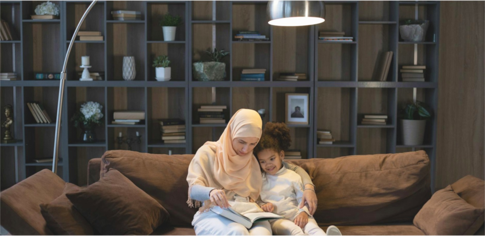

#BersamaJEC
Patient Stories
Simak pengalaman pasien kami yang telah merasakan pelayanan terbaik di JEC untuk kesehatan mata mereka.
Perjuangan Ummah Hiddah Melawan Glaukoma
Ketika Ummah Hiddah pertama kali didiagnosis menderita glaukoma, hatinya diliputi kekhawatiran dan kebingungan. Ia tidak pernah menyangka bahwa penyakit yang sering disebut sebagai "pencuri penglihatan" ini perlahan-lahan merusak saraf optiknya tanpa ia sadari. Awalnya, ia hanya merasakan penglihatan kabur dan tekanan ringan di sekitar mata. Namun, setelah menjalani pemeriksaan di JEC Eye Hospitals & Clinics, ia menyadari bahwa kondisinya membutuhkan perhatian serius.
Menyadari Pentingnya Deteksi Dini
Glaukoma sering kali hadir tanpa gejala yang mencolok. Dalam kasus Ummah, ia menganggap penglihatannya yang semakin kabur hanya akibat kelelahan bekerja di depan layar komputer setiap hari. Namun, pemeriksaan mata di JEC mengungkap bahwa tekanan pada matanya jauh lebih tinggi dari batas normal, sebuah indikator utama glaukoma. Dokter menjelaskan bahwa jika tidak segera ditangani, penyakit ini dapat menyebabkan kebutaan permanen.
Fakta tentang Glaukoma
- Apa itu Glaukoma?
Glaukoma adalah penyakit mata yang merusak saraf optik, biasanya akibat tekanan cairan dalam mata yang meningkat. Ini adalah penyebab utama kebutaan di seluruh dunia.
- Gejala Glaukoma
- Penglihatan kabur
- Rasa sakit atau tekanan pada mata
- Hilangnya penglihatan tepi secara perlahan
- Lingkaran cahaya (halos) di sekitar lampu
- Siapa yang Berisiko?
- Orang dengan riwayat keluarga glaukoma
- Lansia di atas 40 tahun
- Pasien dengan diabetes, hipertensi, atau migrain
- Mereka yang memiliki tekanan mata tinggi
- Deteksi Dini Penting
Glaukoma sering tidak menunjukkan gejala hingga tahap lanjut. Oleh karena itu, pemeriksaan mata secara rutin sangat dianjurkan, terutama bagi mereka yang memiliki faktor risiko.
Perjalanan Melawan Glaukoma
Ummah memulai perawatannya dengan menggunakan obat tetes mata untuk mengontrol tekanan mata. Ia juga menjadwalkan operasi kecil untuk membantu mencegah kerusakan lebih lanjut pada saraf optik. Selama proses ini, Ummah menyadari pentingnya disiplin dalam menjalani perawatan dan kontrol rutin. Setiap kunjungan ke JEC memperkuat keyakinannya bahwa ia berada di tangan yang tepat. Tim dokter dan perawat selalu menjelaskan langkah-langkah perawatan dengan jelas dan mendukungnya secara emosional.
Pengobatan Glaukoma
- Obat Tetes Mata
Glaukoma adalah penyakit mata yang merusak saraf optik, biasanya akibat tekanan cairan dalam mata yang meningkat. Ini adalah penyebab utama kebutaan di seluruh dunia.
- Operasi Laser
Prosedur ini membantu memperbaiki aliran cairan di dalam mata untuk menurunkan tekanan.
- Operasi Tradisional
Dalam beberapa kasus, operasi trabekulektomi diperlukan untuk membuat saluran baru bagi cairan mata.
- Implan Saluran Cairan
Untuk kasus yang lebih kompleks, implan digunakan untuk mengontrol tekanan mata.
Dukungan Keluarga dan Lingkungan
Selain perawatan medis, dukungan keluarga menjadi kekuatan utama Ummah. Anak-anaknya membantu memastikan ia tidak pernah lupa menggunakan obat tetes mata, sementara suaminya selalu mendampinginya dalam setiap kontrol. Ia juga mulai bergabung dengan komunitas pasien glaukoma yang mempertemukannya dengan orang-orang yang memiliki pengalaman serupa.
Di komunitas ini, Ummah berbagi cerita perjuangannya, mengingatkan orang lain akan pentingnya deteksi dini dan perawatan rutin. “Saya ingin orang lain tahu bahwa glaukoma bukan akhir dari segalanya. Dengan perawatan yang tepat, kita tetap bisa menjalani hidup dengan baik,” katanya dengan optimis.
Pelajaran Berharga
Perjuangan melawan glaukoma mengajarkan Ummah banyak hal. Ia kini lebih menghargai kesehatan matanya dan waktu yang dimilikinya. Melalui pengalaman ini, ia juga berkomitmen untuk menyebarkan kesadaran tentang glaukoma. “Jika saya bisa membantu satu orang saja untuk memeriksakan matanya lebih awal, maka perjuangan saya tidak sia-sia,” katanya.
#BersamaJEC untuk Masa Depan Lebih Cerah
Kisah Ummah Hiddah adalah salah satu dari sekian banyak cerita inspiratif yang menunjukkan betapa pentingnya deteksi dini dan perawatan yang tepat untuk penyakit glaukoma. JEC Eye Hospitals & Clinics terus berkomitmen untuk mendampingi pasien dalam menjaga kesehatan mata mereka, memberikan pelayanan terbaik, dan menyebarkan kesadaran tentang pentingnya pemeriksaan mata secara rutin. Karena bersama JEC, harapan untuk masa depan yang lebih cerah selalu ada.
Dipublikasikan pada: 15 Desember 2024 | Admin